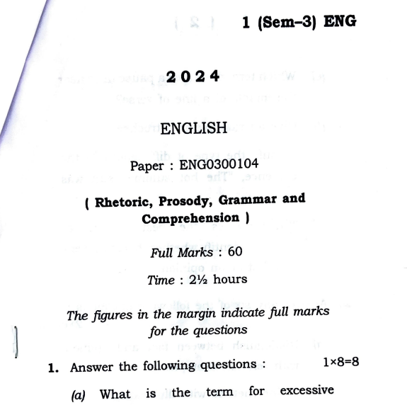

English Question Paper 2024 (Sem-3) - ENG0300104
Table of Contents
Paper Information
| Paper Code: | ENG0300104 |
| Course: | Bachelor of Arts (BA) |
| Semester: | 3rd Semester |
| Subject: | English (Rhetoric, Prosody, Grammar and Comprehension) |
| Full Marks: | 60 |
| Time: | 2½ hours |
| Total Pages: | 16 |
Question Paper Preview

File Size: 1.8 MB | Pages: 16 | Format: PDF
Paper Details
This is the official Gauhati University BA 3rd Semester English question paper for the year 2024. The paper code is ENG0300104 and covers Rhetoric, Prosody, Grammar and Comprehension. The exam is worth 60 marks and has a duration of 2½ hours.
Course Type
FYUGP
University
Gauhati University
Academic Session
2024
Focus Areas
Rhetoric, Prosody, Grammar, Comprehension
Exam Pattern & Key Questions
The paper is divided into four main sections with a total of 60 marks. Marks are indicated in the margin.
Section 1: Very Short Answer (1 mark each)
- (a) What is the term for excessive exaggeration in rhetoric?
- (b) Name the rhetorical device that compares two things using 'like' or 'as'.
- (c) How many metrical feet does a pentameter have?
- (d) Which term refers to the arrangement of stressed and unstressed syllables in poetry?
- (e) Which term describes a pause in or near the middle of a line of verse?
- (f) Give an example of a trochee.
- (g) Identify the type of diffuseness in the sentence, "The hot summer sun was scorching".
- (h) "Chocolate is the best ice cream flavour." Identify whether this statement is a fact or an opinion.
Section 2: Short Answer (2 marks each)
- (a) Distinguish between fact and opinion with relevant examples.
- (b) Define rhetoric with illustrations.
- (c) Briefly explain personification with relevant examples.
- (d) Distinguish between poetry and verse.
- (e) Identify the link between verbosity and diffuseness of style.
- (f) Define solecism and give suitable examples.
- (g) What is rhyme? Define with examples.
- (h) Verb forms (4 sentences)
- (i) Prepositions (4 sentences)
- (j) What is a heroic couplet? Define briefly.
Section 3: Medium Answer (5 marks each)
- (a) Comprehension passage on Estonia ferry disaster (5 sub-questions)
- (b) Brevity violations in 5 sentences
- (c) Define and describe two rhetorical devices based on association
- (d) Distinguish between: (i) Metonymy and synecdoche, (ii) Alliteration and assonance
- (e) Mark accents and identify meter in Gray's Elegy lines
- (f) Define stanza and explain two types
- (g) Summary of travel passage
- (h) Key features of an ideal paragraph
Section 4: Long Answer (10 marks each)
- (a) Summary, writing type, and style analysis of Peter Pan passage
- (b) Identify and explain five rhetorical devices in Keats' "To Autumn"
- (c) Define 'measure' in prosody; illustrate two disyllabic and two trisyllabic feet
- (d) Importance of brevity; forms of diffuseness with examples
- (e) Features of picturesque style; analyze given poem passage
Preparation Tips
To excel in the ENG0300104 exam, follow these targeted strategies:
1. Master Rhetorical Devices
- Memorize key figures of speech: simile, metaphor, personification, hyperbole, etc.
- Practice identifying devices in passages (e.g., Keats, Gray).
2. Prosody & Meter
- Learn scansion: mark stressed/unstressed syllables.
- Practice iambic pentameter, trochaic, anapestic feet.
- Understand caesura, rhyme schemes, and stanza forms.
3. Grammar & Style
- Practice verb tenses, prepositions, and sentence correction.
- Focus on brevity: eliminate redundancy, circumlocution.
- Understand fact vs. opinion, solecism, diffuseness.
4. Comprehension & Summary
- Practice summarizing long passages in 100-150 words.
- Identify main ideas, tone, and writing style (descriptive, argumentative).
5. Practice Previous Papers
- Solve 2023, 2022 papers under timed conditions.
- Revise rhetorical analysis of romantic poetry excerpts.